Operating Documentation
Direction 5193574-800, Rev# 22
LightSpeed 7.X Service Methods
Module Version 2.0, Version Date 11/8/10
Operating Documentation |
| Required Persons | Preliminary Reqs | Procedure | Finalization |
|---|---|---|---|
| 1 | 15 minutes | 5 hours | 15-30 minutes |
This demonstrates how to replace a 2010 Axial Drive assembly.
| Last Updated: | May 7, 2010 |
Illustration 1: Drive Assembly to be installed
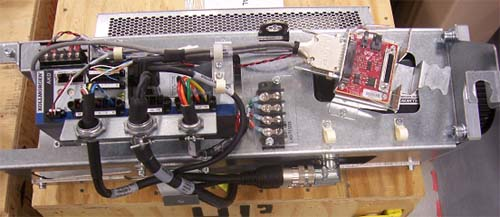
| Item | Qty | Effectivity | Part# | Manufacturer | |
|---|---|---|---|---|---|
| Chain hoist | 1 | - | 5149069 (or equivalent) | - | |
| FE Torque Wrench Kit | 1 | - | 46-268445G1 or 5135228 or equivalent | - | |
| Standard FE Tool Kit | 1 | - | - | - | |
| Tube Hoist Assembly (supplied with system) | 1 | - | - | - | |
| 3mm driver bit | 1 | - | - | - | |
| 5mm driver bit | 1 | - | - | - | |
| 10mm hex key or hex bit socket with 12-inch extension | 1 | - | - | - | |
| 6mm hex key or hex bit socket with 12-inch extension | 1 | - | - | - | |
| 7/32 -inch hex bit socket | 1 | - | - | - | |
| Flat head screwdriver | 1 | - | - | - | |
| Item | Qty | Effectivity | Part# | Manufacturer | |
|---|---|---|---|---|---|
| 2010 Axial Drive Assembly Kit | 5344400 | - | - | - | |
| ||||
| electrocution hazard | ||||
| voltage is present in gantry | ||||
| use proper lockout/tagout procedures from the Safety section of the service documentation when stated during procedure, this procedure includes work directly in the gantry power pan. |
| ||||
| Burn Hazard. | ||||
| The surface on THE BRAKE RESISTOR can become very hot. | ||||
| ALLOW TIME FOR SURFACE TO COOL BEFORE TOUCHING. |
| ||||
| blood borne pathogens may be present | ||||
| unprotected contact with blood borne pathogens may CAUSE DISEASE transmission. | ||||
| use proper procedures and ppe to avoid blood borne pathogens. |
| ||||
| Follow ALL required safety and PPE procedures customary for your organization, when working on this product. | ||||
| Condition | Reference | Effectivity |
|---|---|---|
Only trained service personnel should service the GE CT Scanner. | - | - |
| ||||
| This procedure uses many screw, lock and flat washer combinations. Make sure the order of installation has the lock washer positioned between the flat washer and head of the screw. | ||||
Remove gantry right side cover and disable Axial drive, HVDC and 120 VAC service switches from the Service Switch Panel. For cover removal refer to Replacement > Gantry > Enclosure > Cover Removal Procedure.
Perform all required LOTO activities to remove all power from the gantry.
Remove the gantry left, top, front and rear covers. Connect the cover E-stop circuit to the terminators on the gantry.
Disconnect all connections to the right options interface panel and remove the two bolts attaching the panel to the gantry, and remove the bottom gantry cover.
Loosen the two front screws and remove the two rear screws of the gantry tilting bottom cover to allow removal of slip ring cover and drive pulley cover.
Remove the right side tilting safety cover with a 5mm hex wrench for easier access to the drive module.
Position gantry so that there are minimal obstructions from the hoist setup to the drive/motor assembly position. See Illustration 2.
Illustration 2: Gantry Positioning
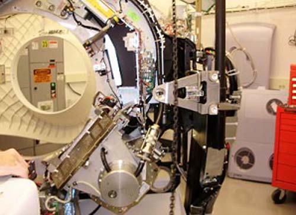
Engage the rotating assembly indexer lock to prevent gantry rotation during this procedure.
| ||||
| Be careful when removing the slip ring cover. You may need to loosen the tilting base cover to aid in removal of the slip ring cover. Slip Ring transmitter ring damage could occur if the cover is scraped on the ring surface. | ||||
Remove the lower slip ring cover by loosening the captive screws.
Disconnect the axial power cable, holding brake cable and TGPU cable from existing axial drive and pull excess wires through the back of the frame. See Illustration 3.
| NOTE: | To disconnect the power cable ends from the terminal strip, removal of power strip cover is necessary. |
Illustration 3: Power cable, brake cable and TGPU cable to be disconnected.
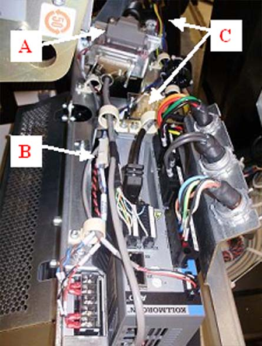
| Illustration 3 Key | |
| A | TGPU cable |
| B | Holding brake cable |
| C | Power cable (connected to terminal strip and cable clamp) |
Remove the drive gear cover by removing the two or three M6 hex screws, flat washers and washer locks. See Illustration 4 below.
Illustration 4: Gear Cover
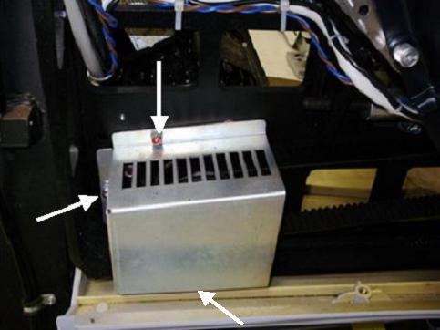
Loosen the axial drive belt. Refer to Illustration 5.
Using a 10mm hex key, or hex bit socket, loosen the two mounting screws on the plate.
Using a 6mm hex key, or hex bit socket with a 12-in. extenstion, fully loosen the elongated hex screw to loosen the drive belt.
Illustration 5: Threaded rod and 2 mounting screws
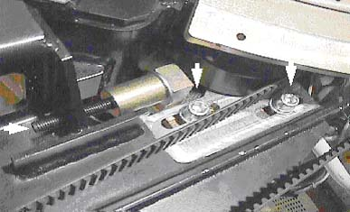
Remove the drive belt from the drive gear. Take care to not disturb the teeth engagement along the rotating assembly.
Assemble the gantry tube hoist frame and install hoist. Clip the end of the chain to the hoist ring on the axial drive to support the drive assembly (see Illustration 8 for reference).
| ||||
| heavy object | ||||
| motor asseMbly is in an awkward location while removing or installing. motor assembly can shift when removing mounting hardware. | ||||
| make sure the motor is supported with a hoist. |
Using a 7/32-in hex bit socket, remove the four (4) hex screws mounting the motor to the gantry frame. See Illustration 6.
| NOTE: | Screws may be very tight, be careful when initially loosening motor mount screws. |
Illustration 6: Removing the four (4) hex screws will release motor.
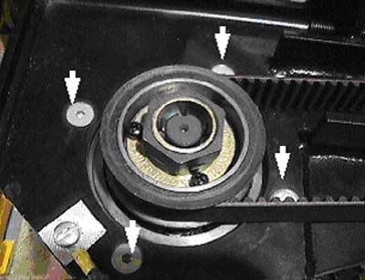
| ||||
| heavy object | ||||
| motor is heavy | ||||
| exercise care when replacing the motor. make certain to support the motor with a hoist. |
Guide the motor assembly out of the gantry and set aside. Leave the hoist assembly set up as it will be required for the installation of the new drive.
Remove safety cover bracket (Figure B, Illustration 7) and lower Cantrell and bracket (Figure A,C, Illustration 7) from the drive assembly. You will need to reuse these brackets on the new assembly during installation.
Illustration 7: Safety cover bracket and lower Cantrell to be reused.
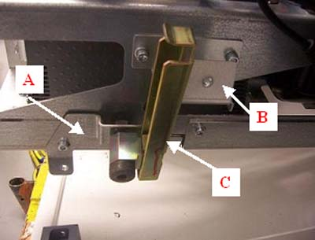
| Key to Illustration 7 | |
| A | Cantrell bracket |
| B | Safety cover bracket |
| C | Lower Cantrell |
Attach safety cover bracket and lower Cantrell bracket onto the new drive assembly. See Illustration 7.
Attach new drive assembly to the hoist via the hook on top of the box. The drive will tilt downward on the motor end of the assembly after lifting it off the ground. See Illustration 8.
Illustration 8: Mounting drive assembly to hoist
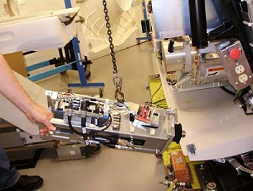
Guide the drive into position and pivot so the drive is in correct orientation with the frame. See Illustration 9 below.
Illustration 9: Guide drive into position
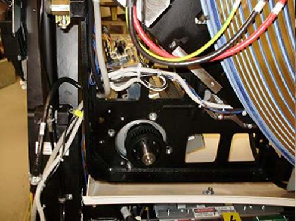
Rest guide on hole in back frame, then position so bolt holes line up. May have to pull back on drive slightly. Refer to Illustration 10 below:
Illustration 10: Pull back on motor hub to hold in place before bolting to frame.
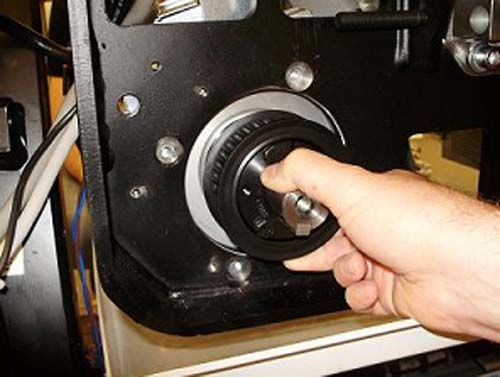
Bolt motor to frame from the back. Torque according to table.
| 33 N-m | 24.3 lb-ft | 336.4 kg-cm |
Remove hoist once assembly is mounted. Attach Cantrell to Cantrell bracket if not already attached. See Illustration 7.
| NOTE: | When installing the covers at the end of this procedure, it may be necessary to adjust the Cantrell to fit properly onto the front cover bracket. This is possible by turning the threaded shaft at the bottom of the Cantrell. |
Pull power cable through gantry frame above the motor mount. Clamp cable in bulkhead. See Illustration 11 below.
Illustration 11: Routing of axial drive power cable
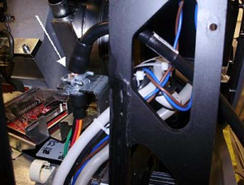
Guide wire bundle through two plastic cable clamps toward terminal strip. Refer to Illustration 12 for visual reference of cable clamps.
Illustration 12: plastic cable clamp diagram
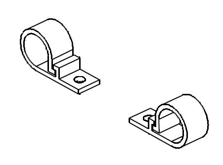
Remove the cover from the terminal strip.
Loosen the screws on motor side of terminal strip with a flat head screwdriver.
Connect wires into terminal strip as follows (L to R): “GND”, ”R”, “S”, “T”. These should line up with neighbor wires from the 2010 Axial Drive, and torque according to table below. See Illustration 13 for orientation of the wires.
| 1.0 N-m | 8.9 lb-in | 0.7 lb-ft | 10.2 kg-cm |
Illustration 13: Terminal strip connections
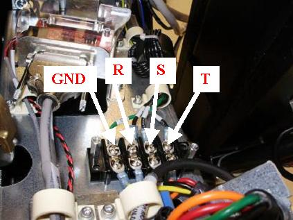
Tighten screws and re-install cover.
Guide TGPU cable over bracket and connect to the back of the KIM board assembly and tighten the two (2) Velcro straps around TGPU cable and bracket. See illustration below.
Illustration 14: Routing and connection of TGPU cable
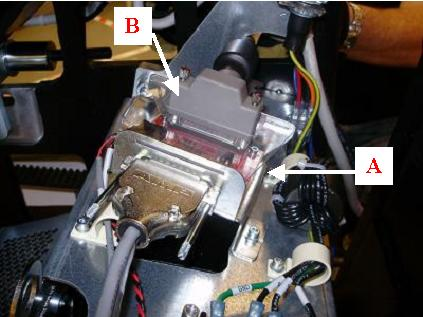
| Illustration 14 Key | |
| A | KIM Board assembly |
| B | Mounting of TGPU cable |
Pull the holding brake wire (blue and brown) through and connect to the power supply assembly. See Illustration 15 below.
Illustration 15: Connection of holding brake wire
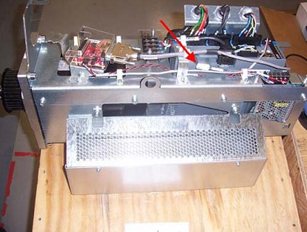
Replace belt around motor hub and tighten belt.
Refer to Align, Setup, Calibrations > Gantry > CT Belt Tension Check & Adjustment.
Replace gear cover and torque according to Table below. See Illustration 4 as a reference.
| 8 N-m | 71 lb-in | 6 lb-ft | 81.5 kg-cm |
Replace tilting bottom cover and tilting gantry safety cover.
Remove LOTO to restore system power.
Turn on the 120 VAC service switch from the Service Switch Panel.
When power is turned to ON, a code “o2” should display on the axial drive window. See Illustration 16 below:
Illustration 16: o2 Display
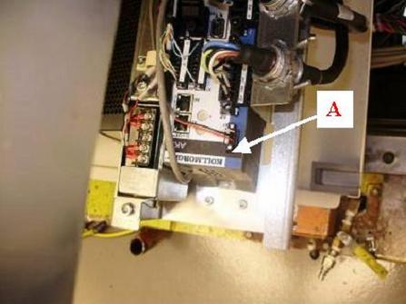
| Illustration 16 Key | |
| A | o2 code should display in this window |
Turn off the 120 VAC service switch from the Service Switch Panel.
Re-install right side tilting gantry cover.
Disengage rotating assembly lock and reassemble bottom cover, then install lower slip ring cover.
Install the gantry front and rear covers, scan window, then the top and left side covers.
Turn on the 120 VAC, Axial Drive, and HVDC service switches from the Service Switch Panel.
Install the gantry right side cover.
Perform a Fastcal from the[Daily Prep] button of the scan display.
Run the System Scanning Test from the Functional Checks procedure list.